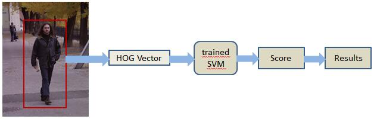
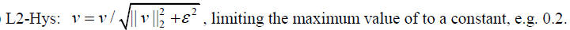
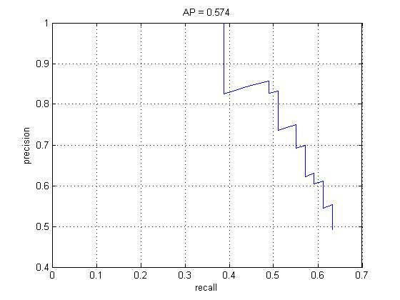

Name: Lin Huangjing Student ID: 1155072677
Pedestrian is one of the most challenging task in the field of computer vision. In this assignment, I will apply histogram of gradient (HOG) as descriptor and linear SVM as detector to fulfill this task.
The framework of detection is implemented based on the theory of image pyramid. The pedestrians in different images have different resolutions. So a image pyramid is built up in variety resolutions to find out pedestrians in different size. A trained SVM is used to convolve every image in the pyramid, scoring the different patches located in it.
The technical details of this project can be divided into two main part: (1) HOG descriptor[1][2], which is used to represent training and testing samples; (2) SVM detection, which is used to evaluate the score of how each sample may contain pedestrian.
This report is organized as follow: In Section 1, the outline of pedestrian detection task is introduced. In Section 2, I will introduce the details of the methods and how these methods are implemented. In Section 3, the results of the project will be illustrated.
The pedestrian detection frame work of this project can be see in Figure 1 as follow:

Fig 1. Main Framework
First of all, the patches are extracted from the detected image via a sliding window. And then, the patches are constructed into vectors by HOG method. After that, a trained SVM is used to value the probability of patches, and give scores of detecting. Finally, pick out the scores higher than the threshold, and write down their coordinates to generate the final results. The HOG descriptor and SVM detection are two main parts of this project.
2.1 HOG Descriptor
A patch are transformed by HOG[3] via three procedures: (1) Compute angle and magnitude of gradient, (2) Construct HOG for each cell, and (3) Construct the normalized HOG for each block. (As Fig. 2 show)
Fig 2. Flow of HOG Descriptor
2.1.1 Compute Angle and Magnitude of Gradient
Firstly, the direction and the magnitude of gradient should be calculated. The direction is represented by an angle. The fundamental concept of Laplacian Gradient is implemented to compute the gradient. I implemented this part by two convolutional operations to generate calculate dx, dy of every pixel respectively. And then, combine dx, dy to calculate the angles and magnitudes that we need. The equation of angle and magnitude are showed in the Figure 3.

Fig 3. Equations of Angle and Magnitude of Gradient
The Flow of computation is as follow:

Fig 4. Flow of Computation of Laplacian Gradient
2.1.2 Construct HOG for each cell
In this part, the size of cell is fixed to cover 8x8 pixels. The direction space from [-¦Ð, ¦Ð] is divided into 9 part, corresponding to 9 bins. Every bin represents the statistic information of magnitudes in different directions.
2.1.3 Construct Normalized HOG for Each Block
In this part, cells are organized into block. Each block contains 2x2 cells and will be flatted into a vector. It means that every block vectors is in dimension of 9(bins) * (2*2)(cells) * = 36. To get better results, I implements the normalization by L2-Hys regulation, which improved the results in a large scale. The formulation of L2-Hys is defined as follow:

Fig 5. Definition of L2-Hys
2.2.1 Sliding Window Strategy
Detection procedure uses sliding window strategy. A sliding window is used to detect patches of image and a score map is returned as its result. Take a 256x256x36 HOG descriptor and a 15x7x36 trained detector as example. The 36-dimension HOG descriptor and detector are split in 36 channels firstly. And then convolutional operations are implemented in single channel separately, and finally, they are added up together to generate the final score map. The procedure are described in the Figure 6 as follow:

Fig 6. Calculation of Score Map
¡¡
After score map calculating, the blocks are selected by a threshold. If its score is higher than threshold, the coordinates of the box will be calculated and store in the cv::Mat bbox.
The calculation of box coordinates is given as follows:

Fig 7. Calculation of Box Coordinates
Finally, the boxes calculated from different images of pyramid will be collected together and be used for final presentation.
2.2.3 Build Image Pyramid
In order to detect the pedestrian in different resolution, the original image are resized into different resolution and pushed into a image pyramid. In this part, resize function of OpenCV is used. The level of my pyramid is 3. The scales of corresponding levels are 0.21,0.27 and 0.3 respectively.
In the experimental part, the parameter of my method are set as follow:
scale = [0.21, 0.27, 0.3],
threshold = [1.5, 1.55, 1.6],
overlap ration is 0.2
3.1 Accuracy
The average precision (AP) of my method on the validation data is about 0.57 [4][5].

Fig 6. Average Precision
¡¡
3.2 Detection Demonstration


[1]. HOG tutorial. http://chrisjmccormick.wordpress.com/2013/05/09/hog-person-detector-tutorial/
[2]. HOG introduction. http://en.wikipedia.org/wiki/Histogram_of_oriented_gradients
[3]. N.Dalal and B.Triggs. <<Histograms of Oriented Gradients for Human
Detection>>, CVPR 2013.
[4]. Precision and recall. http://en.wikipedia.org/wiki/Precision_and_recall
[5]. Average precision.
http://en.wikipedia.org/wiki/Information_retrieval#Average_precision